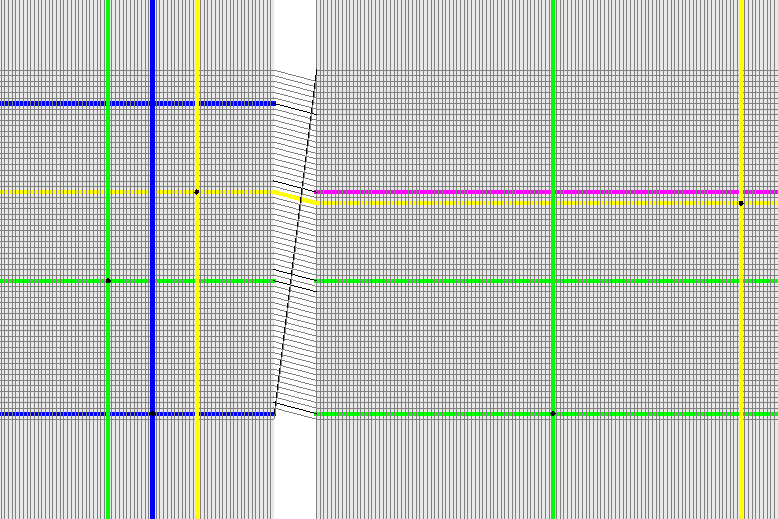

Appendix¶
BrainScaleS¶
Job queue Demo - HBP Summit 2014¶
On a UHEI BrainScaleS cluster frontend node:
cd somewhere-on-your-wang:
socksify git clone https://github.com/electronicvisions/hbp_platform_demo
cd hbp_platform_demo
module load pynn
module load mongo
module load PlatformDemo/20140924_sschmitt
srun -p wafer python run.py nmpm1
*wait*
display result.png
Demo running on a HICANNv2 Wafer module.

Demo running on the ESS.
The repository can be also when creating job via the web interface, cf. Using the web interface.
roqt (Visualization)¶
You need to be in the roqt directory, because the ui file is loaded by a relative path:
cd marocco/tools/roqt
PYTHONPATH=$PWD/lib:$PYTHONPATH bin/roqt /some/path/to/roqt.bin

Routing visualization of the roqt visualization tool.